Bases Pick 2DRAFT
Up to three bases each for Zei, Bai, Seila and Mu. Each row: the published base first, then looks a and b as drafted on 5 Nov (Gemini 3.1 Flash Image, a closed model by Google), then tonight’s recasts from the base front on GPT Image 2.5 (a closed model by OpenAI) and FLUX.2 [klein] 4B (open weights, by Black Forest Labs), with style “Same as this picture”. The looks are the three-looks proposal’s words: only skin, hair and eyes change; clothes and signature details stay.
Marks are the coding agent’s reading: look matched (the proposal’s skin, hair and eyes), still them (clothes and signature details), usable as a base front (one figure, plain background, the whole body), shareable.
AI-generated test pictures, not published. Drafted by the coding agent (Claude, a closed model by Anthropic). DRAFT until the owner approves it.
Zei
Look a: “deep brown skin, short black twists with one electric-blue streak, quick dark eyes”. Look b: “fair skin, spiky ash-brown hair with one electric-blue streak, quick grey eyes”.

published base (CHALLENGE.defaultLooks), row bffc7b6a-edc7-4fd7-8922-bcab5f8c4c2dsha256 131f235227a54b06f6f11253f37a09b5001bf5f72326a6c9949a21800990dc7c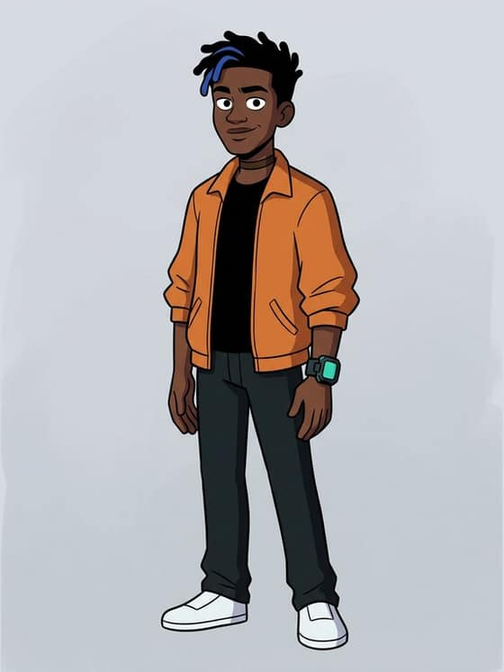
docs/starting-sheet-drafts/directions/ledger.json (origin/challenge-styles), row file directions/zei-look-a-gemini.jpgsha256 8d7ffae44f13b3fb73ea31013aee9d9f43070ebd23b6c1390e1a7c905af97faa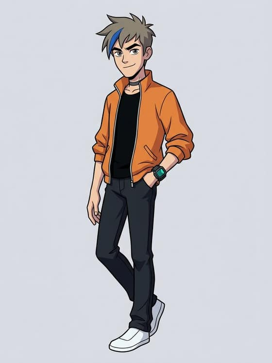
docs/starting-sheet-drafts/directions/ledger.json (origin/challenge-styles), row file directions/zei-look-b-gemini.jpgsha256 2f821e20b54899661994c34d92cce3b582212db5d602b8ea8c59d2aa64687e79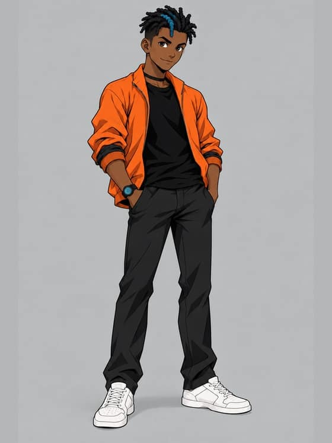
docs/starting-sheet-drafts/bases-pick-2-2026-11-10/ledger.json, row 17sha256 98620d0109e2354bddc269471ec59f8a23089ad9bce6a457a0d09091262f4aee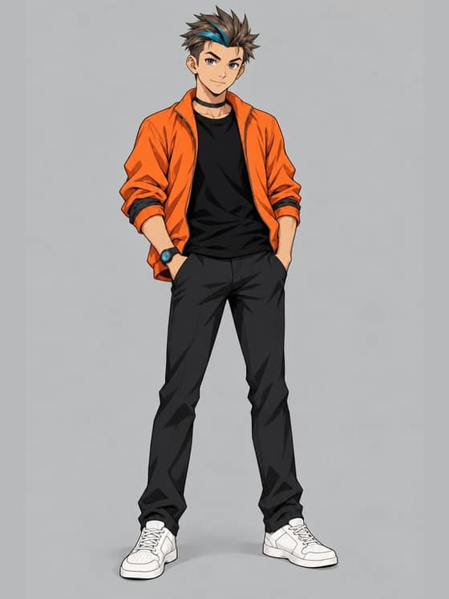
docs/starting-sheet-drafts/bases-pick-2-2026-11-10/ledger.json, row 18sha256 88de0a4709d0579fb06d2e1352098b01d25e7e2f7879e3a2b70384343422789a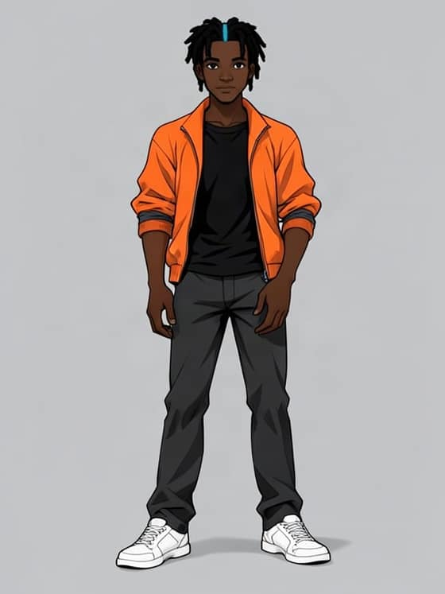
docs/starting-sheet-drafts/bases-pick-2-2026-11-10/ledger.json, row 9sha256 baaaeb1cb233d0a18fb1799d2ef94feaddf60949f8b5f8908da22ec30b9e303b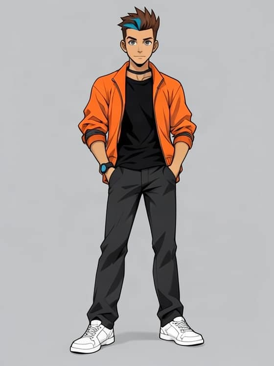
docs/starting-sheet-drafts/bases-pick-2-2026-11-10/ledger.json, row 10sha256 b014e9ae070a4a9276d0316b9f54fabc01ba48f4e009fbf32840e397921d8ccfBai
Look a: “light olive skin, long straight black hair in a high ponytail dyed magenta at the ends, dark eyes”. Look b: “fair freckled skin, a high ponytail of loose auburn curls dyed magenta at the ends, hazel eyes”. Bai’s Gemini drafts are her a2 and b2.

published base (CHALLENGE.defaultLooks), row 110d5973-31c2-4d96-9a88-5838d8a6d868sha256 01538922456b9bf61192ed291b8f26595c694599b94eb95be8b60ce931b76a96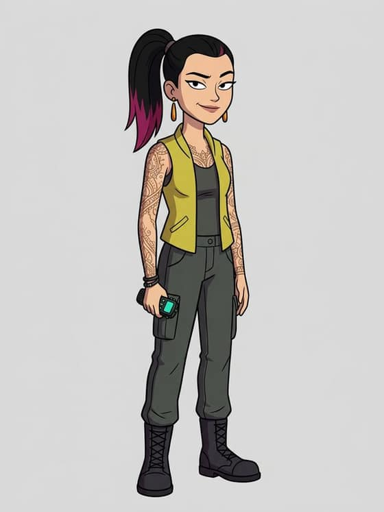
docs/starting-sheet-drafts/directions/ledger.json (origin/challenge-styles), row file directions/bai-look-a2-gemini.jpgsha256 a4f423406eb2a73125e242e9e36d90cf8c20a1bb40ea2553058431b39e2d7274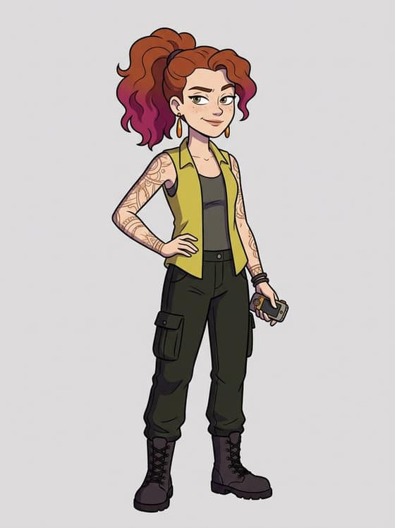
docs/starting-sheet-drafts/directions/ledger.json (origin/challenge-styles), row file directions/bai-look-b2-gemini.jpgsha256 259315795906cf7b5c994eb63dbc412657080fb3f91bc5b09486711a3e7dc903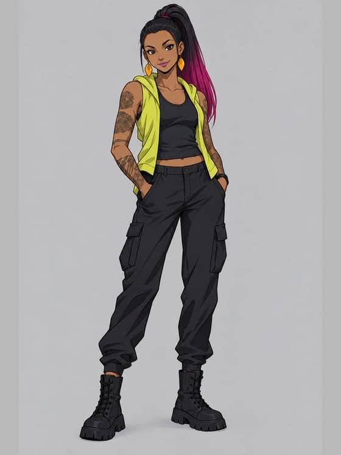
docs/starting-sheet-drafts/bases-pick-2-2026-11-10/ledger.json, row 19sha256 3a77101a8b92004a3958ff9e65fc2e582ecde42ab988e9092b526d1b38942124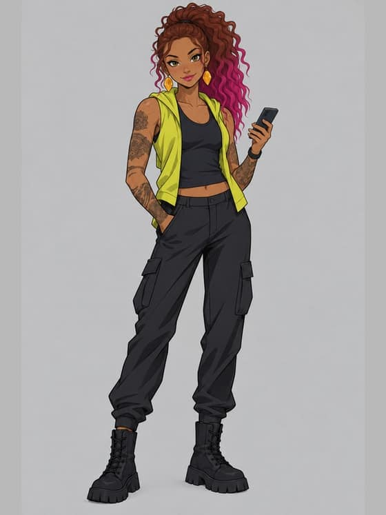
docs/starting-sheet-drafts/bases-pick-2-2026-11-10/ledger.json, row 20sha256 30d7f5ca99f3c0b7b53968e8394fe68405fddd2ed10636face1f2c1b018f2b28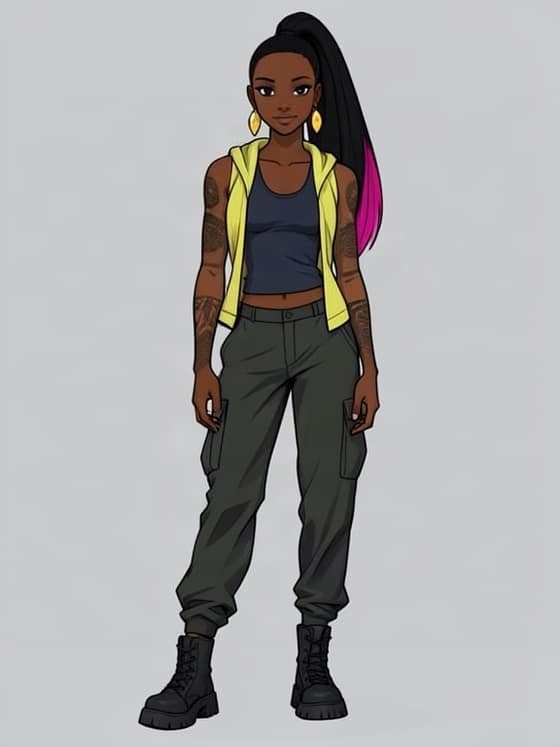
docs/starting-sheet-drafts/bases-pick-2-2026-11-10/ledger.json, row 11sha256 f99f03acefc3dff983900032be2c2c4b1e5578580bea9790e01f782be2cc414f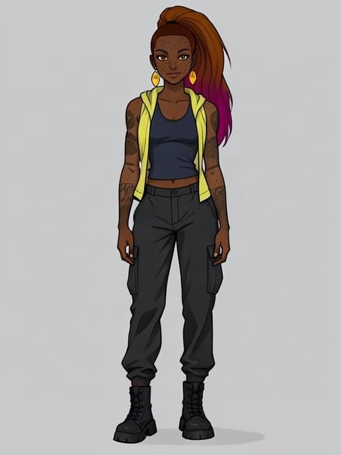
docs/starting-sheet-drafts/bases-pick-2-2026-11-10/ledger.json, row 12sha256 72bd6a41479645b3eadd32b05dcc1c21c62cdf7d3f822a0796664059e8756faeSeila
Look a: “light tan skin, shoulder-length wavy black hair gathered loosely back, alert dark eyes”. Look b: “fair skin, shoulder-length auburn hair in a loose braid, alert green eyes”.

published base (CHALLENGE.defaultLooks), row 1f64f9f4-ede5-42a4-8f56-a8ecb7f29abasha256 3ef4825ca8f49aabf05ddcdaa8119e9b229f523a3dfc1dc2af0238cbc95a4d13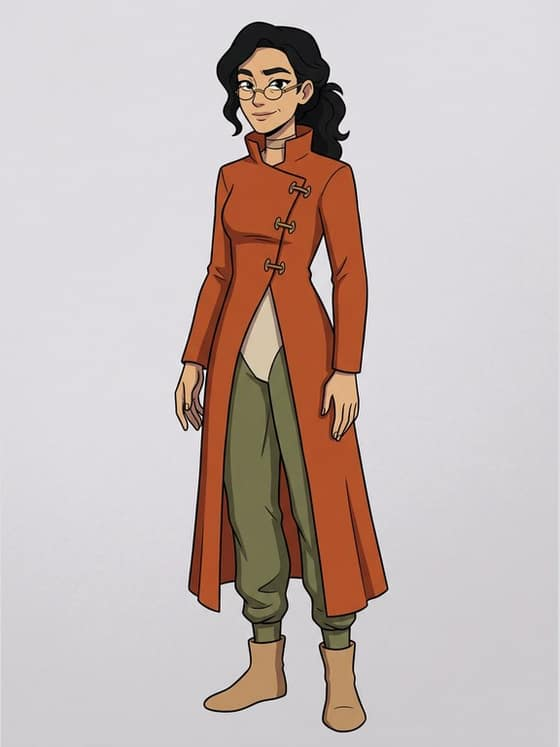
docs/starting-sheet-drafts/directions/ledger.json (origin/challenge-styles), row file directions/seila-look-a-gemini.jpgsha256 4891cc2fae0d205d1a51325d2503e1b478adf503aaea488a21309742678a93a1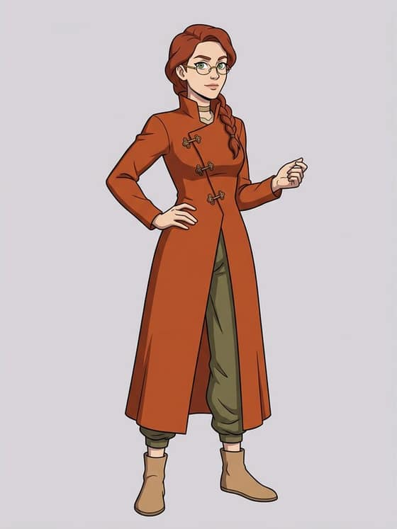
docs/starting-sheet-drafts/directions/ledger.json (origin/challenge-styles), row file directions/seila-look-b-gemini.jpgsha256 61036bb4c786bc64c16b06bb04202c09e8421b5ab988e4bedf3286f5731c1d2d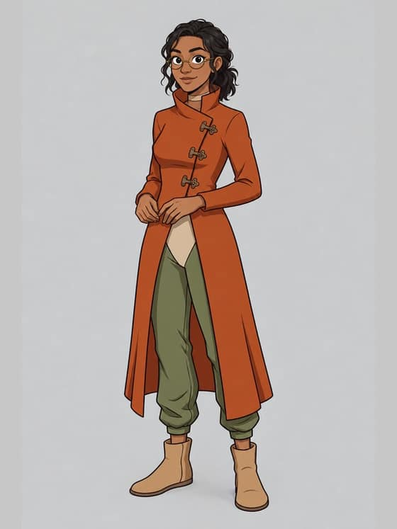
docs/starting-sheet-drafts/bases-pick-2-2026-11-10/ledger.json, row 21sha256 22ef5e6602ab1167c02befaaa331fde0e3a36990166b7e3fa75a3d2950545c3c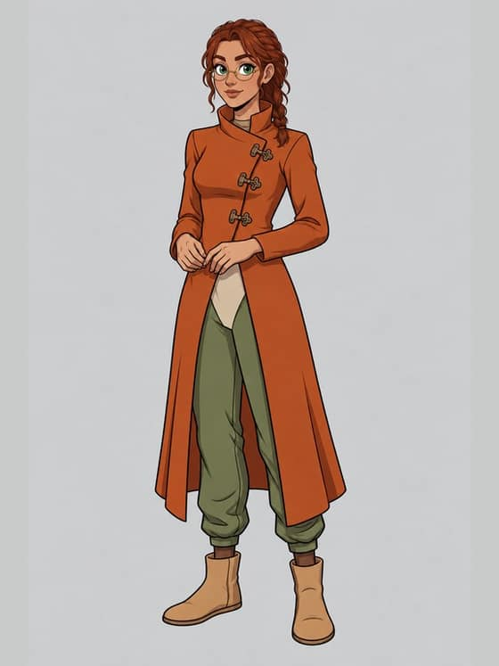
docs/starting-sheet-drafts/bases-pick-2-2026-11-10/ledger.json, row 22sha256 5a59f88f1665e1c56104e11ae168de523aae4a168be68ff41f778e7cfb43bde2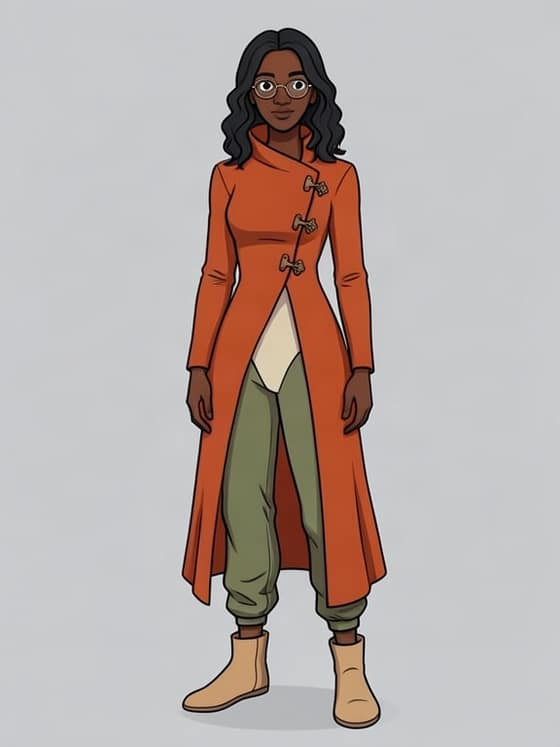
docs/starting-sheet-drafts/bases-pick-2-2026-11-10/ledger.json, row 13sha256 32173cf16b6ded5be32e2e0eab86906906600cb80e20c894bd0ec38e7510c4f7docs/starting-sheet-drafts/bases-pick-2-2026-11-10/ledger.json, row 14Mu
Look a: “pale skin, short silver hair in a sharp asymmetric cut, keen grey eyes”. Look b: “deep brown skin, short silver coils in a sharp asymmetric cut, keen dark eyes”.

published base (CHALLENGE.defaultLooks), row 15a9af1d-9eef-4e25-be57-738d9823dd74sha256 3e6ae696865441d24aa1dde262dac043964ab8c9633d19174eb7074091087fb5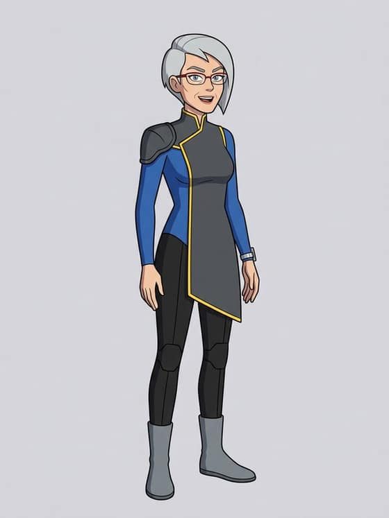
docs/starting-sheet-drafts/directions/ledger.json (origin/challenge-styles), row file directions/mu-look-a-gemini.jpgsha256 33856131281db9202fa736025eda91a578823b3e0fe1250e350f8b5bdd1b92fb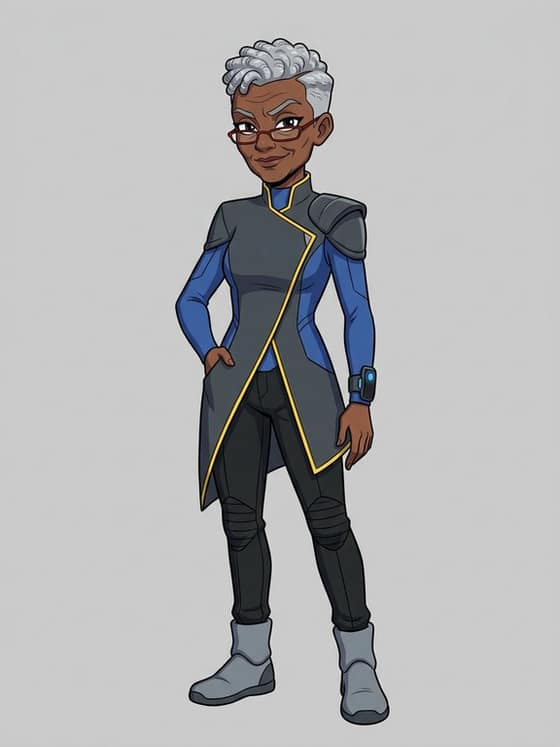
docs/starting-sheet-drafts/directions/ledger.json (origin/challenge-styles), row file directions/mu-look-b-gemini.jpgsha256 3960eda6c76f470d78b8062a0be6abdc371fd3920779395cab23eeed61d0c7e5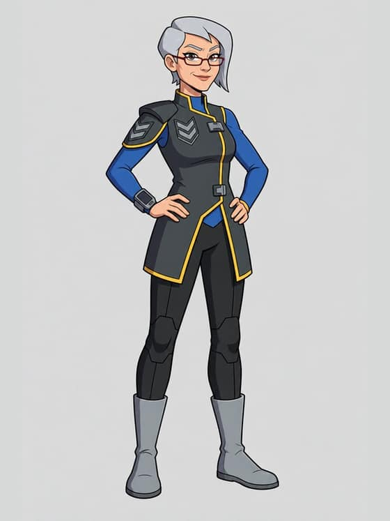
docs/starting-sheet-drafts/bases-pick-2-2026-11-10/ledger.json, row 23sha256 0217a068691527f6ab30a82b71fa346b5d636d84f003bd8f61ff0ed83ee95ff9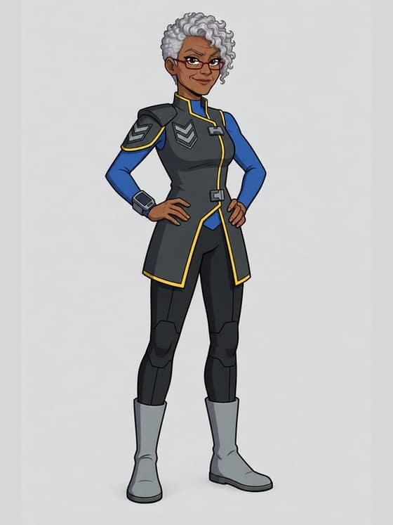
docs/starting-sheet-drafts/bases-pick-2-2026-11-10/ledger.json, row 24sha256 79d25dba94f2486ee899f4b189021ecfaa6778466ce1853f4f4412f130114b52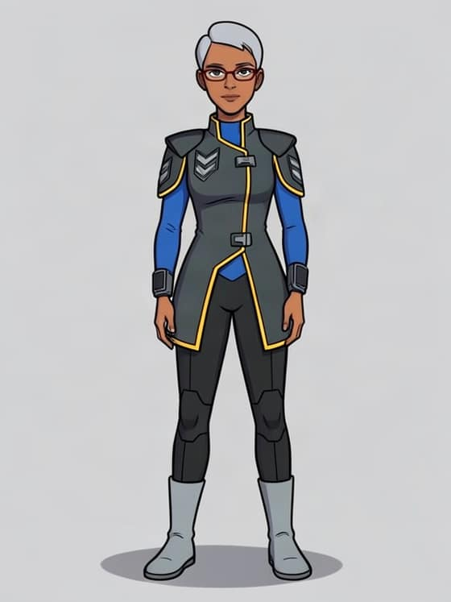
docs/starting-sheet-drafts/bases-pick-2-2026-11-10/ledger.json, row 15sha256 f231c975b248cbdd478dc4a74ba02dc4ac0a19e21d025c1d43c1e9aaac10d2a3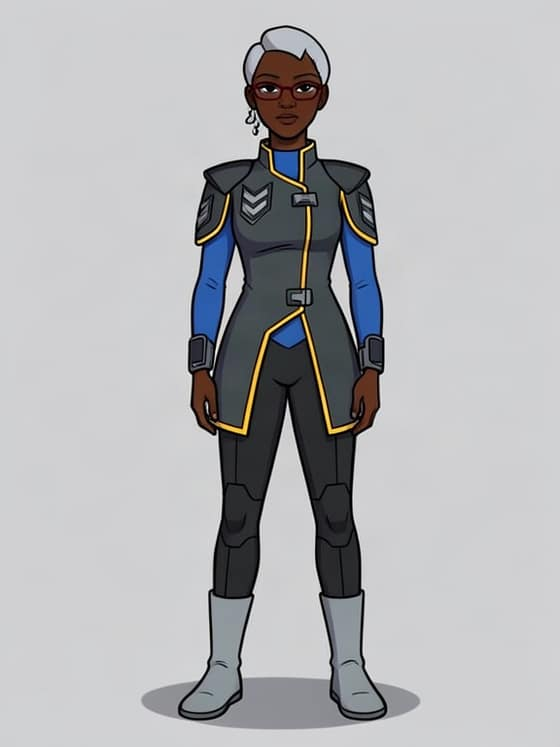
docs/starting-sheet-drafts/bases-pick-2-2026-11-10/ledger.json, row 16sha256 10a828c4a0f9679720c8b3ac17cb3efd4b9d61870a1cb25878b518abf2c92207